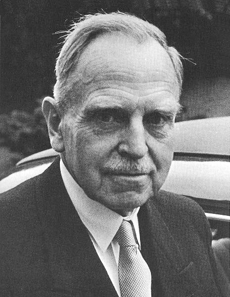

Tópico:
Contexto Histórico para a Criação das Bombas Atômicas
Descoberta da Radioatividade e Fissão Nuclear
No início do século XX, cientistas como Marie Curie, Henri Becquerel e Ernest Rutherford descobriram a radioatividade e a estrutura do átomo. Em 1938, Otto Hahn e Fritz Strassmann descobriram a fissão nuclear, na qual o núcleo de um átomo é dividido em fragmentos menores, liberando uma quantidade significativa de energia.


Projeto Manhattan
Em 1942, durante a Segunda Guerra Mundial, os Estados Unidos iniciaram o Projeto Manhattan, um esforço secreto para desenvolver armas nucleares. Cientistas renomados, como Robert Oppenheimer, Enrico Fermi e Niels Bohr, estiveram envolvidos no projeto.